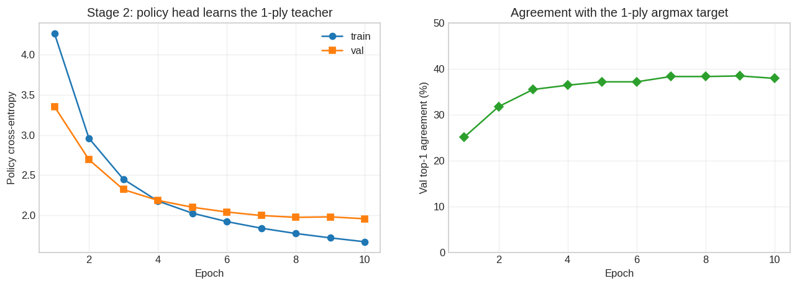

Final val MSE: 0.0021 (epoch 20)Supervised warm-starts for backgammon self-play
The self-play experiments (see Training Analysis) reached a blunt conclusion: pure AlphaZero self-play from a random initialization, at our compute scale, does not produce competitive backgammon. The plateau is slow rather than absolute — exp006 showed a statistically significant but tiny gain over 2000 extra iterations (+0.270 ppg), and exp005 showed 800-sim search is the best lever — but closing the ~2.3 ppg gap to GNUBG that way would take on the order of 17,000 iterations. The bottleneck is the quality of the self-play training signal, not the amount of it.
Supervised pretraining is the algorithmic pivot: instead of bootstrapping a network from noise, seed it from existing backgammon knowledge and only then continue with self-play. This document tracks that track end to end — the data, the pipeline, each pretraining stage, and what each one taught us. It is deliberately separate from the self-play analysis: different data sources, different methodology, different success criteria.
The hypothesis under test (exp007, not yet run): self-play that starts from a competent value and policy converges faster, or to a higher endpoint, than self-play from scratch. Everything here is in service of producing the best possible seed for that test — and of learning whether a good seed is even reachable by supervised means.
Two ingredients feed the pretraining stages: a value signal (from wildbg) and a policy signal (synthesised from human match positions). The pipeline:
BoardView (raccoon/data/wildbg.py, raccoon/data/bgmatch.py).BoardView → the same (26, 2, 12) tensor the self-play network consumes (raccoon/env/encoder.py): 17 raw board planes plus 9 handcrafted feature channels added in commit 23463f0 (and stress-tested in Stage 6 below). The encoder is shared, so a pretrained checkpoint is a drop-in --resume target for scripts/train.py.raccoon/data/bgmatch_replay.py) so that at every decision we have the legal-action set and can index moves into the 1352-action space. Matching is robust to notation variants (chained vs. split moves, doubles split into two sub-actions, bar/bear-off, forfeits) by falling back to a final-board-signature comparison. Replay success: 99.5% (lasse) / 98.9% (Llabba), ~238k decisions, zero per-step errors.scripts/synthesize_policy_dataset.py). This manufactures policy labels that wildbg does not provide.policy_CE + value_MSE (scripts/pretrain_policy.py). The value term is knowledge distillation against the teacher’s own V(s), intended to keep the value head calibrated while the shared trunk learns the dice channels (which the value-only stage never saw — wildbg positions are all pre-roll).| Source | License | What it provides | Size |
|---|---|---|---|
| wildbg-training | CC0 | Pre-roll positions with rollout equities (win, win_g, win_bg, lose_g, lose_bg) — value labels only, no move labels |
~300k positions |
| bglab match archive | personal match data | Human match positions (BackgammonGalaxy/Studio); used only as a position distribution to replay through OpenSpiel — the human’s move is just “advance,” the policy target comes from V-lookahead | ~1777 matches → ~238k decisions |
A note on the bglab equities: the analysed files carry match-normalised equities (cube-aware, match-score-dependent), not the cubeless money-game equities Raccoon trains for. We therefore ignore bglab’s own labels entirely and use only the raw move sequences as a position source. All value targets come from a network, not from bglab.
pretrain-wildbg-v1)A 20-epoch supervised regression of the value head onto wildbg’s cubeless equities. The policy head receives no gradient and stays at its random initialisation.
Final val MSE: 0.0021 (epoch 20)The value head fits the rollout equities tightly (val MSE ≈ 0.002 — recall the value target is in [-1, 1], so this is a small residual). On its own terms, stage 1 succeeds. The question is whether a calibrated value with a random policy is a usable player.
It is not. As a standalone player, pretrained.pt loses 6-194 (-2.03 ppg) to the strongest self-play checkpoint (exp005 iter_0447) and 0-200 (-2.725 ppg) to GNUBG 2-ply — slightly worse against GNUBG than iter_0447 itself. The diagnosis: with a uniform-ish policy prior, MCTS at 100 simulations explores too broadly to find good moves even when the value head correctly ranks positions. The missing policy prior is the bottleneck. Search rarely reaches the lines the value head would reward.
pretrain-wildbg-v2)Stage 1’s lesson motivates synthesising a policy. Since wildbg has no move labels, we generate them: replay human matches, and at each position do 1-ply lookahead with stage-1’s value head, one-hotting the best child. Then fine-tune both heads (policy CE + value distillation) from pretrained.pt.

Final: val policy_CE=1.957 top1=37.9% val value_MSE=0.0048The policy head learns the target well: top-1 agreement rises from ~0% to ~38%, and value MSE stays flat (distillation holds the value head steady). But top-1 plateaus at ~38% — the student agrees with even its own teacher only ⅜ of the time, and the teacher (1-ply argmax under a GNUBG-weak value head) is itself weak.
Standalone result: a large improvement, but not enough. pretrained_v2 beats value-only pretrained.pt substantially — vs iter_0447 it goes from 3% to 22% wins (+0.79 ppg) — confirming the policy prior was a real bottleneck. But it still loses to iter_0447 (22-78, -1.24 ppg) and is still crushed 0-100 by GNUBG 2-ply (-2.59 ppg). The mechanism is validated; the absolute strength is not there. You cannot distill past your teacher.
pretrain-wildbg-v2b)Stage 2’s ceiling is the teacher. The fix: re-synthesise the policy targets using our strongest value function — exp005 iter_0447 — for the 1-ply lookahead, instead of the weak stage-1 value head. Same matches, same pipeline, better labels. (A side effect: the value-distillation target also becomes iter_0447’s V(s), so v2b distills both heads from iter_0447 rather than merely anchoring the value head. The baseline val MSE jumps to ~0.25, quantifying how much the wildbg-trained value head disagrees with iter_0447.)

Final: val policy_CE=2.616 top1=28.4% val value_MSE=0.0107Note the curves: v2b fits its teacher less closely than v2 did (final top-1 ~28% vs ~38%, higher policy CE), and its value MSE is ~2× higher — it is relearning iter_0447’s value function (baseline disagreement MSE ≈ 0.25) while fitting a harder policy target. By the fitting metrics alone, v2b looks worse than v2. The standalone eval below shows the opposite, which is the whole point of the next callout.
v2b’s top-1 is agreement with a different, stronger teacher than v2’s — the two numbers are not comparable as “policy quality.” A lower top-1 against a better teacher can still yield a stronger player. The decisive comparison is the standalone strength eval below, not the fitting metric — and here it is decisive: v2b reaches parity with iter_0447 despite the worse-looking curves.
pretrain-gnubg-v3)v2b proved teacher quality was the binding, movable constraint — and that distillation tops out at the teacher’s own strength. The way past the ceiling is therefore a better teacher than any network we own. The bglab match archive ships one: analyzed/4-ply/ holds GNUBG 4-ply analysis — the world-class strength the whole project is measured against.
The pipeline (raccoon/data/bganalyzed.py, scripts/synthesize_gnubg_dataset.py): replay each analysed game through OpenSpiel (reusing the board-signature matcher) and, at every non-doubles decision, read GNUBG’s labels straight off the file — a soft policy target softmax(money_equities / T) over the deepest-ply candidates, and a money-equity value from each move’s probability tuple. ~139k positions from ~4319 games (lasse + Llabba 4-ply, plus lasse 2-ply extras), with per-decision Position-ID verification (0 mismatches). Doubles are advanced but unlabeled — OpenSpiel splits them into two decision nodes while GNUBG scores the whole move, so the first-half action is ambiguous.
Two design choices, both confirmed with the user: soft targets (a distribution over GNUBG’s candidates, so near-ties are taught as near-ties — scripts/pretrain_policy.py auto-detects them and uses a soft cross-entropy) and cubeless-money re-ranking (money equities from the tuples, never GNUBG’s match-cubeful Eq.).

Final: val soft_CE=2.600 val value_MSE=0.0075 top1=28.4%The value head snaps onto GNUBG money equities within one epoch (val MSE 0.28 → 0.009) and settles near 0.0075 — the best-calibrated value of any stage. As before, the fitting metrics (top-1 ~28%, same as v2b) say little; the standalone eval below is the verdict, and it is emphatic.
pretrain-gnubg-v4-10x256)Learning #7 split the remaining gap into two student-side axes — capacity and coverage. Stage 4 isolates the first. Same GNUBG 4-ply teacher as v3, same ~139k-position cache; the only change is the network: 6×128 → 10×256 (2.5M → 11.9M parameters). A clean single-variable test of whether a bigger net absorbs more of the teacher, and whether that converts to strength.
The recipe is actually simpler than v3’s: the GNUBG cache carries value targets, so both heads train single-stage from random init on the cache — no wildbg value warm-start, no two-stage pipeline. That makes v4 a slightly harder comparison (it changes the recipe alongside the size) but a fairer-than-it-looks one: any v4 gain comes despite dropping the warm-start. Trained locally on the iMac CPU, 10 epochs, ~5.6 h.

v4 final: top1=31.2% val value_MSE=0.0066 val soft_CE=2.363On the fitting metrics the bigger net is unambiguously better: top-1 climbs to 31.2% (v3: ~28%) and value MSE falls to 0.0066 (v3: 0.0075) — more of the world-class teacher is captured. Whether that converts to strength is the standalone table below; the short answer is yes against the internal bar, no against the external one.
pretrain-gnubg-v5-10x256-dbl)Stage 4 isolated capacity and the standalone section below rules out eval-search; both left the GNUBG gap intact, which pointed at the second student-side axis — coverage (learning #8, and the open question). Stage 5 attacks the most concrete coverage hole in the cache: the ~18% of decisions that are doubles, dropped entirely by v3/v4. They were dropped because OpenSpiel splits a doubles play into two decision nodes while GNUBG scores the whole four-checker move with a single equity — so the first-half policy action is genuinely ambiguous.
The value of those positions is not ambiguous, though: the best candidate’s money equity is the position’s value regardless of how the move is later split. So synthesize_gnubg_dataset.py now emits each doubles decision as a value-only example — empty policy (a -1 sentinel the soft cross-entropy masks out), real value target. That recovers +25,157 doubles as value labels (cache 139k → 164k) and gives the value head doubles coverage for the first time. The policy head still gets no doubles signal — this buys value-calibration breadth, not move-selection breadth. (pretrain_policy.py’s top-1 metric is correspondingly fixed to exclude the value-only rows, so they neither count as wrong nor deflate the accuracy.)
Same 10×256 net and same single-stage-from-random recipe as v4, 20 epochs. (Trained locally in fragments: the iMac’s OpenMP threads busy-spin-collapse under desktop contention — ~12× slower — so the run carries an OMP_WAIT_POLICY=PASSIVE fix that lets idle threads sleep, after which contention degrades gracefully instead of stalling.) Fit plateaus by ~epoch 11 and the last epochs mildly overfit (train CE ↓ to 1.63 while val CE drifts up to 2.37) — the cache is saturated for this net. Final fit edges v4: top-1 33.0% (v4: 31.2%) and value MSE 0.0061 (v4: 0.0066) — and v5’s value number now includes the doubles it learned to evaluate.

vs GNUBG 2-ply (equity/game): v2b=-2.29 v3=-1.79 v4=-1.66 v4 @ 800=-1.84 v5=-1.59On the fitting metrics doubles-recovery is a clean small win. Whether it converts against GNUBG is the standalone table below — and the answer completes the trio: it does not.
The only test that matters: how strong is each checkpoint as an actual player? Two opponents — exp005 iter_0447 (our strongest self-play checkpoint, the internal bar to clear) and GNUBG 2-ply (the external benchmark). Loaded from each experiment’s eval logs.
Earlier versions of this page labeled the external opponent “GNUBG ply=0”. That was a documentation error: every benchmark ran eval_gnubg.py --gnubg-level world, and the adapter maps world → ply=2 (raccoon/eval/gnubg_adapter.py), with each legal child evaluated at full 2-ply (no move filters). The opponent has therefore always been full-width GNUBG 2-ply — “World class” strength. All numbers on this page are unchanged; only the label was wrong. The correction strengthens the results: the remaining ~-1.6 ppg gap is measured against the actual M6-grade opponent, not a weakened one.
| checkpoint | opponent | sims | result | win% | ppg | n |
|:--------------------------|:--------------------|-------:|:---------|:-------|-------:|----:|
| v1 (value-only) | iter_0447 | 100 | 6-194 | 3% | -2.03 | 200 |
| v1 (value-only) | GNUBG 2-ply (world) | 100 | 0-200 | 0% | -2.725 | 200 |
| v2 (1-ply teacher) | iter_0447 | 100 | 22-78 | 22% | -1.24 | 100 |
| v2 (1-ply teacher) | GNUBG 2-ply (world) | 100 | 0-100 | 0% | -2.59 | 100 |
| v2b (iter_0447 teacher) | iter_0447 | 100 | 49-51 | 49% | -0.04 | 100 |
| v2b (iter_0447 teacher) | GNUBG 2-ply (world) | 100 | 0-100 | 0% | -2.29 | 100 |
| v3 (GNUBG 4-ply teacher) | iter_0447 | 100 | 83-17 | 83% | 1.38 | 100 |
| v3 (GNUBG 4-ply teacher) | GNUBG 2-ply (world) | 100 | 3-97 | 3% | -1.79 | 100 |
| v4 (10x256, same teacher) | iter_0447 | 100 | 93-7 | 93% | 1.96 | 100 |
| v4 (10x256, same teacher) | GNUBG 2-ply (world) | 100 | 5-95 | 5% | -1.66 | 100 |
| v4 (10x256, same teacher) | GNUBG 2-ply (world) | 800 | 16-384 | 4% | -1.84 | 400 |
| v5 (10x256, +doubles) | iter_0447 | 100 | 93-7 | 93% | 1.98 | 100 |
| v5 (10x256, +doubles) | GNUBG 2-ply (world) | 100 | 8-92 | 8% | -1.59 | 100 |
| v5 (10x256, +doubles) | GNUBG 2-ply (world) | 800 | 4-96 | 4% | -1.88 | 100 |The progression against iter_0447 is the headline of this whole track:
| Stage | Teacher | Result vs iter_0447 | Equity | vs GNUBG 2-ply |
|---|---|---|---|---|
| v1 | — (random policy) | 6-194 (3%) | -2.03 ppg | -2.725 |
| v2 | pretrained.pt 1-ply | 22-78 (22%) | -1.24 ppg | -2.590 |
| v2b | iter_0447 1-ply | 49-51 (49%) | -0.040 ppg | -2.290 |
| v3 | GNUBG 4-ply | 83-17 (83%) | +1.380 ppg | -1.790 |
| v4 | GNUBG 4-ply, 10×256 net | 93-7 (93%) | +1.960 ppg | -1.660 |
| v5 | GNUBG 4-ply, 10×256 +doubles | 93-7 (93%) | +1.980 ppg | -1.590 |
v2b reaches parity with iter_0447 (-0.040 ppg, n=100, z ≈ -0.2 — indistinguishable from 50/50), playing it to long balanced games (avg 89.6 moves vs v2’s quick 75.5-move collapses). The stronger teacher fully closed the gap that v1 and v2 could not — confirming the binding constraint was label quality, not the method. But parity is the expected ceiling of distillation when iter_0447 is the teacher: v2b compresses iter_0447’s strength (≈290 GPU-hours of self-play) into a ~21h-CPU supervised checkpoint, but cannot exceed it.
v3 breaks that ceiling by distilling a teacher far above iter_0447. GNUBG 4-ply analysis (from the bglab match archive) gives world-class soft policy targets and money-equity values for ~139k non-doubles positions. The result is decisive on both fronts:
M6 (beating GNUBG at money game) is not yet reached — -1.79 ppg, 3% wins — but this is the first hard evidence the gap is closable by supervised means, on a 6×128 net with 100-sim MCTS, no self-play and no GPU. The value head fits GNUBG money equities to val MSE ≈ 0.0075 (better-calibrated than any earlier stage), which is the structural reason search now finds and holds good lines.
Stage 4 (v4) tests capacity, and the answer is two-sided. Same GNUBG 4-ply teacher, a 10×256 net instead of 6×128:
The split is the finding: capacity is real but it is not the M6 unlock. It buys strength against opponents near our own training distribution (iter_0447, a self-play net at a comparable level) yet does almost nothing against GNUBG playing its own lines. That is the signature of the second axis — coverage/generalisation: a net that fits the human-match-position teacher better still meets unfamiliar positions when GNUBG steers the game, and there a bigger-but-equally-narrow net has no edge. The remaining GNUBG gap is a data-coverage and eval-search problem, not a parameter-count one.
And eval search turns out not to be the missing piece either. Re-running v4 against GNUBG at 800 sims — 8× the search — over n=400 does not close the gap: it lands at -1.840 ppg (16-384, 4%), flat-to-slightly-worse than the -1.660 at 100 sims, with GNUBG’s gammon/backgammon rate against us if anything higher (202/84 over 400 games). The lesson is that search is bounded by evaluation quality: deeper MCTS just optimises v4’s off-distribution prior more confidently, sometimes walking further into trouble rather than out of it. So of the two suspects above, eval search is ruled out — the remaining GNUBG gap is a data-coverage / generalisation problem, full stop. (It also tempers, without settling, the hope that high-sim self-play alone rescues the seed — though self-play retrains the prior, so that is a separate test.)
Stage 5 (v5) tests the coverage lever directly — and the gap holds. Recovering the dropped doubles as value labels (+25k, cache 139k→164k) leaves both verdicts essentially where v4 was:
The reading matches capacity and eval-search: the third student-side lever moves the needle by less than noise. And the why is instructive. The recovery is value-only, so v5’s policy head still has zero idea how to play a double — and doubles are ~18% of every game’s high-leverage decisions. Broadening value calibration was never going to teach move selection on the lines GNUBG forces. So coverage in the narrow sense of “more labels of the same kind” is now also spent: the binding gap is on-distribution policy — the moves GNUBG steers into that the bglab human-match archive simply does not contain. That is a job for self-play (which manufactures its own on-distribution policy targets) or a categorically broader policy source, not for more value labels.
v5 at 800 sims repeats and sharpens the v4 lesson. Running v5 at 800 MCTS simulations (n=100) gives 4-96, -1.880 ppg — worse than v5’s 100-sim baseline (-1.59 ppg) and worse than v4 at 800 sims (-1.84 ppg). The value head’s better calibration appears to make MCTS more confident in its backups, so deeper search overrides the distilled GNUBG policy prior more aggressively and drives the network further from the world-class play encoded in that prior. The lesson holds: additional inference-time search cannot substitute for the on-distribution policy knowledge the archive does not contain. More importantly for exp008, the fact that more sims actively hurt means the value head is miscalibrated enough to mislead MCTS even on non-doubles positions — it is not a doubles-only problem.
scripts/error_profile.py replays a benchmark game log move-by-move and scores every decision against a GNUBG 0-ply oracle, turning the headline equity gap into a per-decision breakdown by position type. Run on the v5 800-sim game log (n=100 games, 2675 Raccoon decisions):
side bucket decisions mean loss loss/game share
raccoon total 2675 0.0811 2.170 100%
raccoon non-doubles 1971 0.0669 1.319 61%
raccoon doubles 704 0.1208 0.850 39%
gnubg total 3330 0.0051 0.171 (calibration)
gnubg non-doubles 2591 0.0053 0.138 80%
gnubg doubles 739 0.0045 0.034 20%GNUBG’s 0.171 ppg self-error — it played 2-ply in the match, scored against its own 0-ply — is the measurement baseline. Raccoon’s 2.170 ppg total decision loss minus that 0.171 tracks the observed -1.880 ppg result.
Doubles are 1.8× worse per decision than non-doubles (0.121 vs 0.067 mean loss). Relative to GNUBG 0-ply, Raccoon is 26.8× worse on doubles vs 12.6× worse on non-doubles — the policy head’s structural blindness on doubles is real. The absolute contribution is 0.85 ppg/game.
But non-doubles is the larger absolute problem: 1.32 ppg/game, 61% of total equity loss. Even a hypothetical perfect doubles fix would still leave ~1.3 ppg of loss. The non-doubles deficit, combined with the 800-sim result, points directly at a miscalibrated value head: deeper MCTS search uses bad Q-value backups to override the distilled policy prior on contact positions it has not seen before, compounding rather than correcting the gap.
The implication for exp008: expert iteration must replace both the policy target (GNUBG oracle move labels instead of MCTS visit counts) and the value target (GNUBG oracle money equity instead of discrete terminal outcomes). Fixing only the policy target leaves the value head free to mislead MCTS tree backup, and fixing only the value target leaves the policy prior unimproved on the positions GNUBG steers into.
Stages 1–5 held the encoder fixed. Commit 23463f0 then grew it from 17 to 26 channels, bolting nine handcrafted broadcast features onto the raw board planes — pip count (my / opp / ratio), blot counts, anchor counts, and a “contact” pressure term — switched on wholesale and untested. These features are deterministic functions of the board, so a large net on abundant data could in principle re-derive them; their value, if any, is an inductive-bias shortcut that should matter most when data and capacity are tight. This stage asks whether they pay for their channels.
Method. A paired ablation in a deliberately data-limited regime: 50k wildbg positions, 15 epochs, the default 6×128 net, two seeds per condition (same seed ⇒ same train/val split, so conditions differ only in the features and the input-conv shape). The yardstick is held-out value-MSE, split by wildbg’s race and contact files — a pip count should help races, where equity is nearly pure pip-difference, far more than contact positions. There is no play-strength number here: pretraining leaves the policy head random, so MCTS strength is not meaningful (Stage 1’s lesson). The caveat is baked into the design — this measures the features as a small-scale inductive bias, not at full data, where a larger net may simply learn them.

best val-MSE (2-seed mean): base=0.0031 base+pip RAW=0.0058 (+88%)The first answer was a trap: the features were silently mis-scaled. Adding pip count raised val-MSE by ~88% (0.0058 vs base 0.0031) and the curve is visibly unstable. The cause is not the information — it is the magnitude. The base planes live in [0,1] by construction (bar/15, off/15, die/6); the handcrafted channels were emitted raw — pip count ~95–230, contact ~50–200, roughly 100× larger. A single input convolution reads every channel through one weight scale, so the giant channels dominate the gradient and swamp the value head. The information was useful all along — even while overall MSE blew up, raw-pip’s race MSE tracked base (0.0040 vs 0.0038) — the encoder’s normalisation convention had simply never been extended to the new channels.

feature raw Fix-N (norm) Fix-B (inbn)
-----------------------------------------------------------------------------
base 0.0031 (0.0038/0.0028) 0.0031 (0.0038/0.0028) 0.0034 (0.0034/0.0034)
pip 0.0058 (0.0040/0.0068) 0.0029 (0.0021/0.0032) 0.0028 (0.0021/0.0031)
blots - 0.0027 (0.0028/0.0027) 0.0031 (0.0036/0.0029)
anchors - 0.0029 (0.0029/0.0030) 0.0032 (0.0031/0.0032)
contact - 0.0027 (0.0026/0.0028) 0.0030 (0.0032/0.0029)
all - 0.0022 (0.0018/0.0024) 0.0026 (0.0023/0.0027)
cells: overall (race / contact); 2-seed mean of each run's best epochBoth fixes work; normalising in the encoder is the better one. Two ways to restore scale: Fix-N divides each handcrafted channel by a fixed constant in the encoder (pip & contact ÷167, blots ÷15, anchors ÷6); Fix-B prepends a BatchNorm over the raw input channels so the network standardises them itself. Both pull pip back from 0.0058 to ~0.0028, fully repairing the blowup. Across the grid Fix-N edges Fix-B on every feature group (blots 0.0027 vs 0.0031, contact 0.0027 vs 0.0030, full-26 0.0022 vs 0.0026), and tellingly Fix-B slightly hurts the clean base (0.0034 vs 0.0031): standardising channels that were already normalised just injects per-batch noise. Encoder normalisation is the fix to adopt — it is free at inference and adds no parameters.
Once scaled, the features do earn their place — modestly, and mostly on races. The full 26-channel encoder under Fix-N reaches 0.0022 vs base 0.0031 (−29%) and gets to base’s floor in 4 epochs instead of 15 — a real training-speed win in this regime. The gain is concentrated exactly where predicted: race MSE drops to 0.0018 from base’s 0.0038 (−53%) while contact barely moves. Individually the single-feature groups all land at or just below base (0.0027–0.0029), but those gaps sit inside the seed-to-seed spread — base alone swings 0.0028↔︎0.0034 across two seeds — so no one feature is decisively justified on its own. The robust effects are the full set together and the race-side improvement; the production move is to normalise the existing 26-channel encoder (Fix-N) rather than to prune to a subset.
A calibrated value head is not a player. Stage 1 fit wildbg equities to val MSE ≈ 0.002 yet lost 0-200 to GNUBG. With a random policy prior, MCTS at 100 sims cannot exploit a good value function — it never searches the right moves. The policy prior is load-bearing.
Synthesising policy labels works as a mechanism. 1-ply V-lookahead on human match positions produced a usable policy prior and a large standalone-strength gain (v1→v2: +0.79 ppg vs iter_0447, 3%→22% wins). The random-policy bottleneck was real and is now addressed.
You cannot distill past your teacher — and teacher quality is the whole game. v2’s 1-ply argmax under a GNUBG-weak value head capped the student below iter_0447. Swapping in iter_0447 as the teacher (v2b) closed the gap to parity with no other change. Label quality, not quantity or training duration, was the binding constraint — and it was movable. Strikingly, v2b matches iter_0447 with only ~28% top-1 agreement with its own labels: MCTS at eval time recovers strength from a merely directionally-correct prior (the same “search rescues a diffuse policy” effect seen in exp005).
Supervised distillation can compress ~290 GPU-hours of self-play into ~21h of CPU — and then surpass it. v2b reaches iter_0447-strength purely from supervised distillation, no self-play and no GPU. v3, distilling a teacher stronger than iter_0447, exceeds it by +1.38 ppg. The ceiling is the teacher, and the teacher is a free parameter: point distillation at GNUBG 4-ply and you inherit (a fraction of) GNUBG’s strength.
A world-class teacher is the unlock — and the gap to GNUBG is closable. v3 is the first checkpoint in the project to beat iter_0447 and the first to win games against GNUBG 2-ply (3-97, -1.79 ppg, from a universal 0-100 before). No new search, no bigger net, no self-play — only better labels. The seven self-play experiments plateaued because the self-generated training signal was too weak; an external world-class signal breaks the plateau directly.
The replay layer is reusable infrastructure. Matching moves into OpenSpiel’s action space by final-board signature (rather than notation) gave 99%+ replay success across the raw and analysed corpora — useful for any future work needing human/engine positions (move-quality analysis, opening books, eval suites).
The binding constraint has shifted from teacher to student. v3 distils GNUBG 4-ply yet loses heavily to GNUBG 2-ply (-1.79 ppg) — a faithful 4-ply imitator would beat 2-ply, so v3 captures only a fraction of its teacher (top-1 ~28%). The remaining gap is student-side (capacity, coverage, eval search), not teacher strength; and the archive is effectively maxed — the bglab archive holds only 2-ply/4-ply analysis (no rollouts), and 4-ply already sits far above v3’s play. The lever that carried v1→v3 (a stronger teacher from the archive) is spent. (The installed gnubg-nn engine — the benchmark opponent itself — can however label arbitrary new positions programmatically; that is a distinct, untapped label source, separate from the fixed archive.) A corollary, important for the next experiment: small ply differences no longer matter — the 826 lasse 2-ply-only games (~19% of the corpus) are only marginally weaker than 4-ply and earn their place as coverage, not dilution. The one signal genuinely wasted is the 18% of decisions (~29.8k doubles) dropped entirely.
Capacity converts to strength — but only against the internal bar. Stage 4 scaled the net to 10×256 on the same GNUBG 4-ply teacher. It fit the teacher better (top-1 28→31%, value MSE 0.0075→0.0066) and beat iter_0447 far harder than v3 (93-7, +1.96 ppg, +0.58 over v3) — despite dropping v3’s value warm-start. Yet against GNUBG 2-ply it gained nothing within noise (-1.66 vs -1.79, ±0.43 CI). So of the two student-side axes in #7, capacity is necessary but not sufficient: it lifts play against distribution-near opponents but leaves the external GNUBG gap intact, isolating coverage/generalisation (and eval search) as the binding levers for M6. v4 is, however, now the strongest seed the project has — the architecture exp007 should start from (Stage 5 keeps the size and adds coverage; #9).
Input scaling is load-bearing, and was silently broken. The nine handcrafted channels added in 23463f0 were emitted at raw magnitude (~100× the [0,1] base planes), and adding pip count alone raised value-MSE 88% via input-conv domination — a regression hiding in plain sight because the features were never ablated. Restoring the encoder’s normalisation convention (Fix-N, ÷ a fixed constant per channel) both repairs it and turns the features into a net win: the full 26-channel encoder reaches val-MSE 0.0022 vs 0.0031 for raw board planes (−29%, −53% on races) and converges ~4× faster in the data-limited regime. The lesson generalises beyond these features — any new channel must enter at the base planes’ scale, and a BatchNorm-over-inputs alternative (Fix-B) under-performs because it taxes the already-normalised channels. (Stage 6.)
Coverage-as-more-labels is spent too — the binding gap is on-distribution policy. Stage 5 recovered the dropped doubles (~18% of decisions) as value-only labels (+25k, cache 139k→164k) — the most concrete coverage hole — on the same 10×256 net. It improved value calibration (MSE 0.0066→0.0061) and trimmed the worst losses (GNUBG gammons-against 55→37), giving the project’s best external result, 8-92, -1.59 ppg — but within noise of v4, and dead level vs iter_0447 (93-7, +1.98). That closes the loop on the student side: three levers tested in isolation — capacity (v4), eval-search (v4@800), coverage (v5) — and none moves the GNUBG gap beyond noise; it sits at ~-1.6 ppg. The diagnosis sharpens to a specific shortfall. The doubles recovery is value-only (OpenSpiel’s split makes the policy target ambiguous), so the policy head never learns to play a double; and more broadly the bglab human-match archive does not contain the lines GNUBG forces. Supervised distillation from a fixed position archive structurally cannot supply on-distribution policy data — which is exactly what’s missing. That is the case for self-play (the real exp007) as the next lever, now seeded from the strongest, broadest checkpoint the track has produced (v5: v4’s strength plus doubles-value coverage).
This track exists to produce a seed for self-play (the real exp007), so the figure of merit is the strength of the endpoint self-play reaches, not the seed’s own eval. Mostly those track together — a stronger seed gives a stronger endpoint, so optimising the seed’s strength is the right instinct. But two effects pull seed-value and standalone-strength apart, and both point the same way: a bigger net on broader data.
goal.md’s success criterion says money games against GNUBG world class — money play proper includes the doubling cube, which the benchmark harness deliberately excludes. Reaching parity on this page’s cubeless metric is therefore necessary but not sufficient for M6 as written; either the goal gets re-scoped to cubeless explicitly, or cube modelling joins the roadmap.